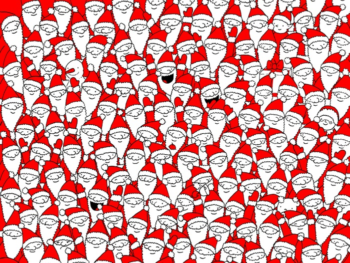

Welcome to the Eye and Facial Tracking Demo. Please follow the instructions below to start the tracking process.
When prompted, look at the objects in the images shown below the camera feed. Your gaze and facial patterns will be recorded for analysis.

Waiting for gaze data...